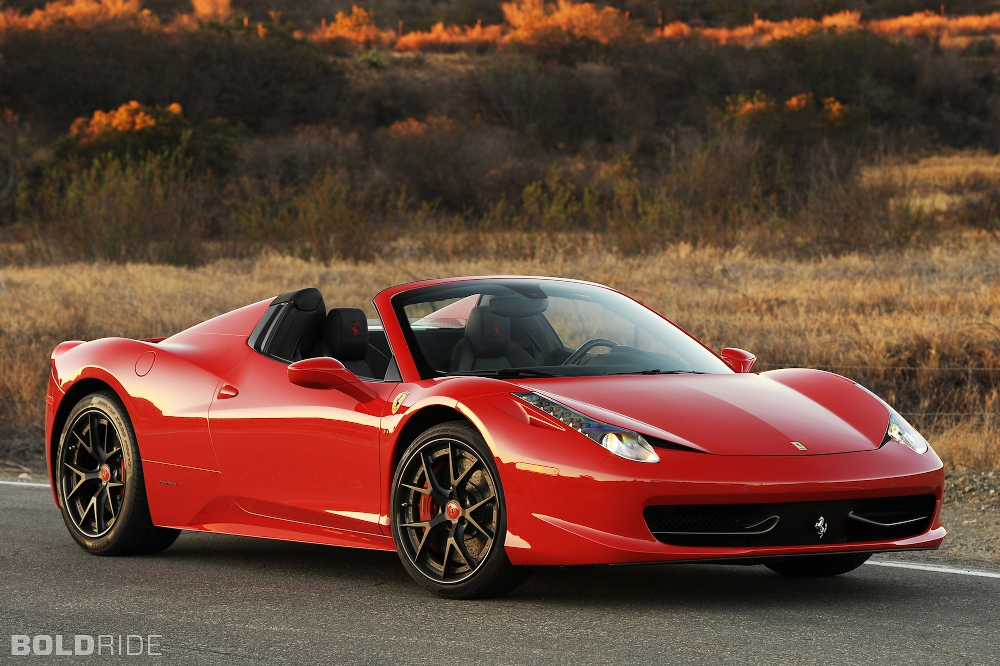

A Enzo é um supercarro de tração traseira e motor central-traseiro produzido pela Ferrari, fabricante italiana de automóveis. Recebeu o nome do criador da companhia, Enzo Anselmo Ferrari. O automóvel é popularmente chamado de Ferrari Enzo, mesmo este não sendo o nome oficial do modelo. O carro foi desenvolvido em 2002 com tecnologias usadas na Fórmula 1, como a carroceria feita inteiramente em fibra de carbono, a transmissão eletro-hidráulica, freios a disco com carbeto de silício reforçados com fibra de carbono (C/SiC) e um sistema de aerodinâmica ativo que levanta um pequeno spoiler em alta velocidade, criando downforce para maior aderência. Após o downforce de 7.600 N ser atingido a 300 km/h, a asa traseira é acionada pelo computador para manter essedownforce.
O motor 6.0 V12 com 48 válvulas foi o primeiro da nova geração da Ferrari. O seu desenho é baseado no V8 doMaserati Quattroporte, utilizando o mesmo projeto básico, só que com o diâmetro dos cilindros 104 mm maior. Este projeto substituiu as antigas arquiteturas dos V12 e V8 usados na maioria das outras Ferraris contemporâneas. AF430 2005 é a segunda Ferrari a ganhar uma versão deste novo projeto.
Ferrari Califórnia
A Ferrari California é um carro desportivo de turismo principal produzido pelo fabricante italiano Ferrari. É um duas portas 2 + 2 duro conversível superior. Quando lançado originalmente, a Califórnia foi alimentado por um front-mid montado naturalmente aspirado 4.3 litros V8; em 2014 Ferrari introduziu a segunda geração do modelo, chamado California T e usando um novo twin-turbo de 3,9 litros V8. O carro revive o nome usado no final dos anos 1950 Ferrari 250 GT Spyder California e 1960 365 Califórnia.
Ferrari 458

A Ferrari 458 Italia é um modelo esportivo da Ferrari. Suas primeiras fotos foram divulgadas pela Ferrari em 28 de julho de 2009 e será apresentado no Salão do Automóvel de Frankfurt. É o sucessor do Ferrari F430 e em 2015 foi substituído pelo Ferrari 488 GTB, que foi revelado no Salão Internacional do Automóvel de Genebra 2015.
É equipada com um motor de 4499 cilindradas, de cárter seco, posicionado no meio da carroçaria em V (com ângulo de 90º entre os pistões). Possui um giro máximo de 9000 rpm e uma relação de compressão de 12.5:1. O projeto desse motor foi destinado a obter uma alta potência junto de uma economia de combustível, o bloco do motor e os pistões foram desenhados para trabalhar melhor com o fluído do óleo e assim evitar uma perda de potência devido a fricção das peças internas do motor. Uma das mais importantes novidades nesse modelo é a introdução de uma caixa de 7 marchas com embreagem dupla, baseado na gestão independente de todas as marchas pares e ímpares que são pré-selecionadas em dois eixos separados, as próximas marchas já ficam prontas para serem engatadas, o diferencial foi integrado à carcaça da caixa para diminuir seu tamanho.